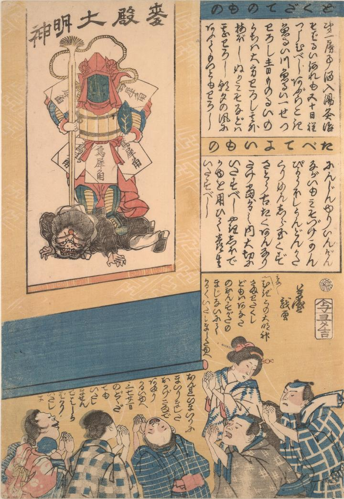

麻疹；ハシカ，麦殿大明神；ムギドノダイミョウジン

たらようの葉を手に持ち、うさい角の鎧を着けた麻疹独特の神である麦殿大明神が、麻疹神を踏みつけている。
著作者：歌川芳盛／出典：親書誌：U426_nichibunken_0009：麦殿大明神；ムギドノダイミョウジン／日付：2006／資源識別子：U426_nichibunken_0009_0001_0000
Copyright (c)2010- International Research Center for Japanese Studies, Kyoto, Japan. All rights reserved.